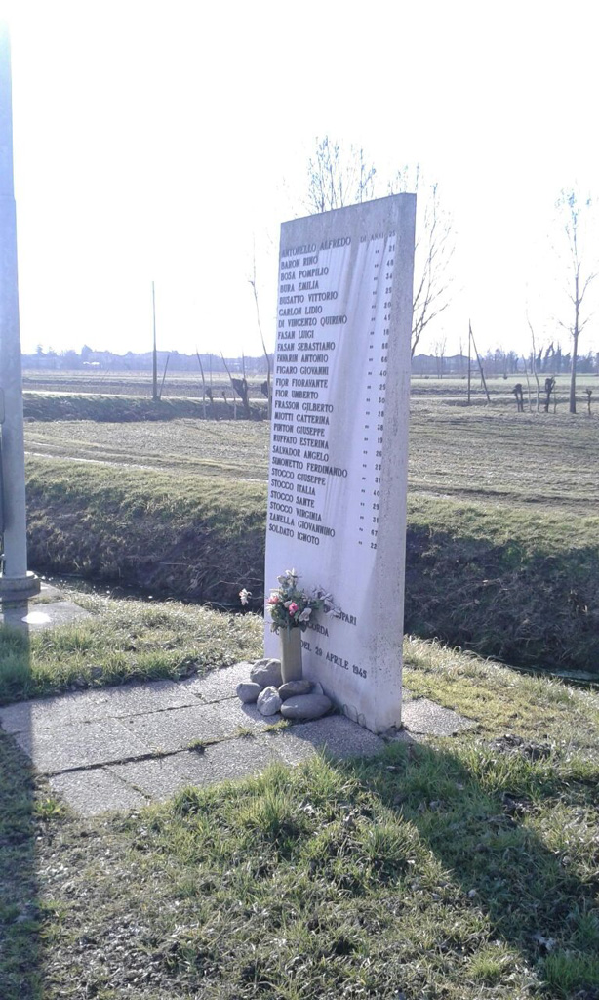

A San Martino di Lupari, in località Maglio –situata tra Abbazia Pisani e Borghetto– il 29 aprile 1945 i tedeschi colpirono il comando del Battaglione partigiano "Pegorin", causando diversi morti tra i partigiani e tra i civili e incendiando abitazioni. Quella in zona Maglio, fu probabilmente un'azione punitiva anti-partigiana.
“La sede del comando del battaglione Pegorin, è annidato nella casa di Sebastiano Fasan. Usano lanciafiamme e proiettili dei panzerfaust che sfondano porte e mura. E’ una strage. La casa è circondata e non c'è scampo. I patrioti che cadono in combattimento sono molti. Il nipote del Fasan, Luigi, 17 anni, è ucciso sul suo letto, il vecchio Sebastiano ha una gamba fratturata, gli scaricano addosso un mitra poi incendiano la casa.” (Ultimo Atto, di R.Quintavalle D.Volpi,1983)
Quest'opera è stata eretta nel 1945 per ricordare i trucidati del Maglio e delle case vicine durante gli avvenimenti avvenuti il 29 aprile. Nella stele, che ha forma di parallelepipedo rettangolare, sono incisi, in ordine alfabetico, ventiquattro nomi di giovani e di adulti, con a fianco di ognuno l’età al momento della loro morte.